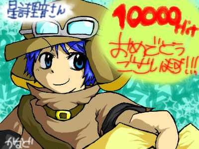
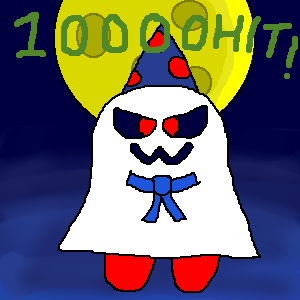
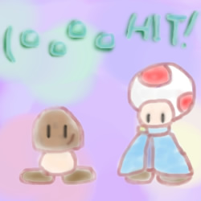
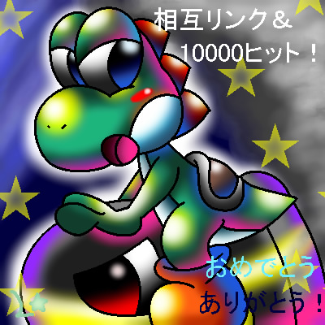
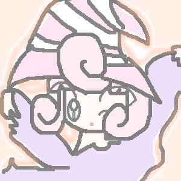
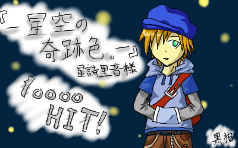

１００００HIT！
THANK YOU THANK YOU VERY MUTH EVERYONE！

かなぐさんから頂きました、パレッタ擬人化のオメイラです･･！
ううああぁ、本当にありがとうございます･･！！（平伏。
パレッタが本当にかっこよくて、なんだかもうかっさらって欲しいです（こらこら
大切にいたしますｖありがとうございました･･！これからもよろしくお願いします＾ワ＾

ダブルバッテンさんから頂きました、シロスｋ･･いえ、ランペルのオメイラです！
背景の月も手伝って、全体的にペパマリのイメージがひしひしと伝わってきます･･ｖ
なんだかまたペパマリがやりたくなってきてしまいました。ありがとうございました！

絵筆さんから頂きました、クリスケとカーレッジのオメイラです！
見てるとほんわかと癒されますー･･ｖ色使いが優しくて、とても優しい雰囲気で･･！
私のオリキャラをわざわざ描いて下さってありがとうございましたｖこれからもよろしくお願いします。

ルイッシー☆さんから頂きました、ヨッシーとキラーのオメイラですｖ
もう本当に言葉がでないほどキラキラ輝いていて･･！このHPの名前にもある星が散りばめられてるのも素敵です㊥ｄ
このような光の使い方、見習いたいです本当に･･！ありがとうございました！

ダイナーズさんから頂きました、ビビアン擬人化のオメイラです！
わざわざ初めて描いてくださったそうでして･･！わわ、なんだか嬉しい＋申し訳ないです･･！
ビビアンのウィンクがとっても可愛くて素敵ですｖありがとうございました！

黒猫さんから頂きました、クリオ擬人化のオメイラです・・！
私の大好きなキャラを擬人化してくださり・・！背景と文字も綺麗ですーｖ
黒猫さんの、独特なシャープ風の絵の描き方に憧れます。ありがとうございました！これからもよろしくお願いします。